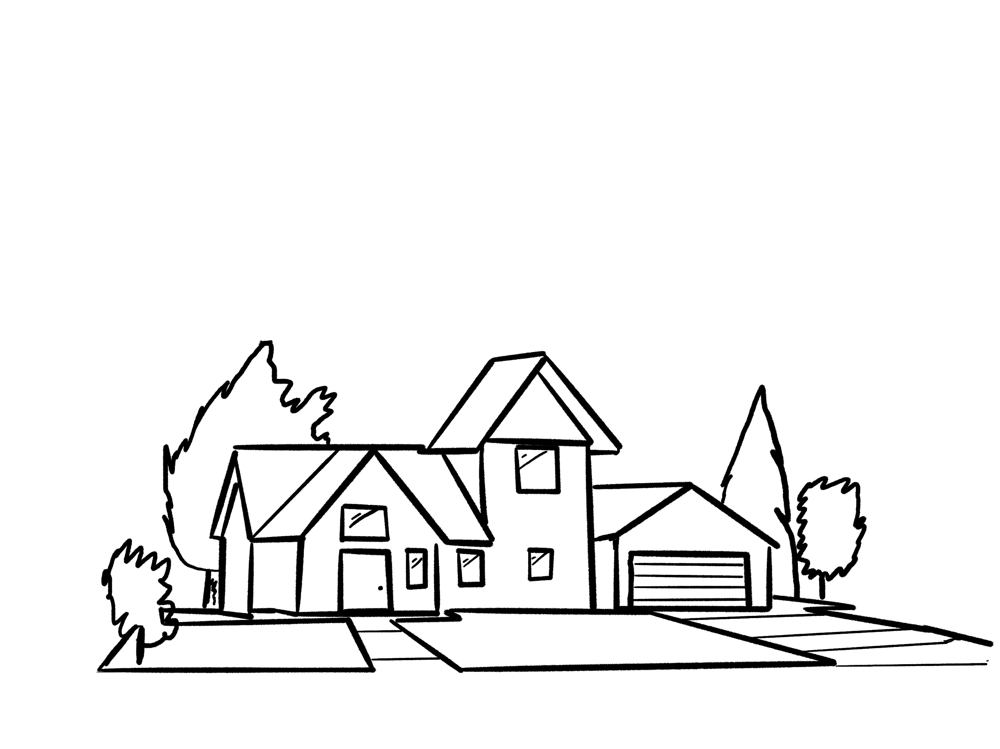
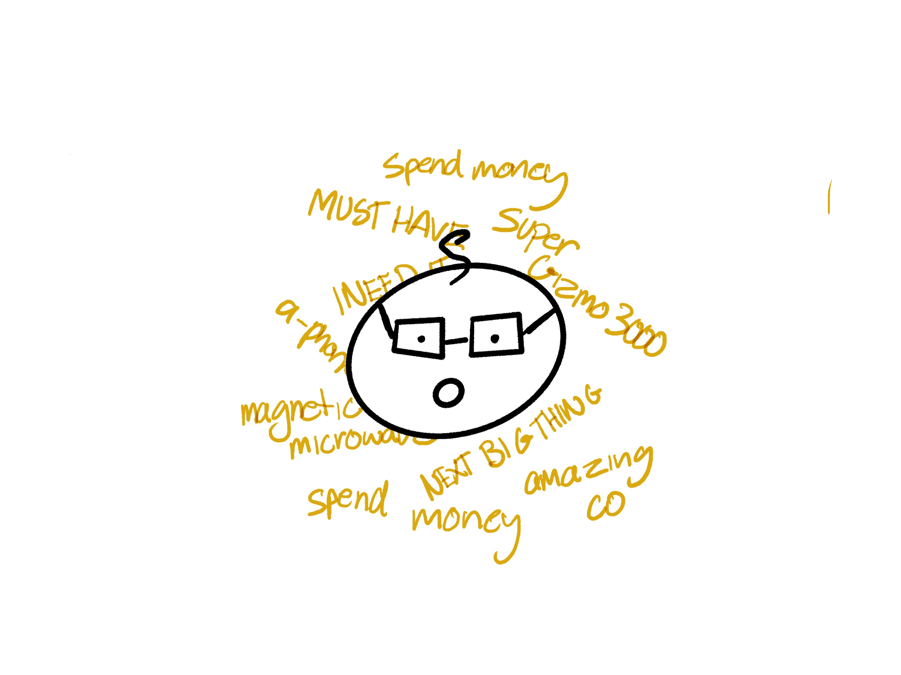

Once upon a time in a land far far away, there lived a man named Tim Buysalot. Tim resided in a town obsessed with every new flashy product and every new gadget produced by Amazing Co. The small suburban town known to many as ‘Consumeropolis’ is a place that Tim loves to call home. Surrounded by a community equally as obsessed as Tim was with having nothing but the best and newest doodads.

Now Tim had a problem, he didn’t have the latest SuperGizmo 3000. He saw ads for it everywhere, taunting him. Whenever he opened his a-Mac, whenever he used his a-Phone Super Deluxe 200. Tim began to fill with envy as he saw every new review and influencer using the product. Now it was only announced 5 hours ago and released 2 hours ago, but time moves fast in Consumeropolis.

Tim thought about what he would have to do to have it. If he didn’t get it soon everyone would get it before him. Tim stared at his current SuperGizmo that he bought last week. It pales in comparison to the new SuperGizmo, the new SuperGizmo came fully equipped with a 2-pixel better resolution camera and the latest and, exclusive to the SuperGizmo 3000, the most accurate and advanced GPS system in the world. Now the SuperGizmo wasn’t a product that moved so Tim was perplexed as to why it would need a GPS system but that only fuelled his passion to own the product. He had to check out the amazing camera quality and what the GPS system would do.
Tim walked over to his storage room which had hundreds of previous iterations of SuperGizmo’s that weren’t used anymore. “What a waste of space” Tim thought. He needed all the room that he could get to fit his new SuperGizmo, so he loaded up all the old SuperGizmos into his car that makes toasted sandwiches as he drives and drove to the SuperGizmo tip. A mountain of old definitely unusable SuperGizmos that people didn’t want anymore.
After dropping off the old SuperGizmos and enjoying a sandwich as he drove, Tim headed straight for the Amazing Co. HQ in Successtopia to purchase his new SuperGizmo 3000. Although Tim needed to pay some of his urgent water and gas bills Tim knew that they could wait as the SuperGizmo was much more important.